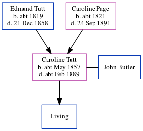

Caroline Bromley Butler (née Tutt) cMay 1857 - c1889
[ Home ] | [ Calendar ] | [ Surnames Index ] | [ Errors ] | [ Family History ]The child of Edmund Tutt (a sawyer) and Caroline Page (a laundress), Caroline Tutt, the great-great-aunt of Nigel Horne, was born in Buckland, Kent, England c. May 18571,2,3,4,5,6, was baptised there at St Andrew's Church on 13 Mar 1858 and married John Butler, in Hammersmith, London, England on 14 Oct 18788 (Oct/Nov/Dec). She had 1 child, James Edmund Stephen Thomas, whose father is unknown.
During her life, she was living at Shooter's Hill in Buckland on 7 Apr 18619 - less than a mile from her sister Jane Tutt who was living at 13 Shooter's Hill in Buckland and her brother James who was living at 13 Shooter's Hill in Buckland -; in Smeeth, Kent, England in 18712; and in Gillingham, Kent, England in 18813.
She died c. Feb 1889 in Dover, Kent, England6,7.
Parents
- Edmund was born c. 1819
- Caroline Bromley was born c. 1821
Citations
- 1861 England Census Online publication - Provo, UT, USA: The Generations Network, Inc., 2005.Original data - Census Returns of England and Wales, 1861. Kew, Surrey, England: The National Archives of the UK (TNA): Public Record Office (PRO), 1861. Data imaged from the National
- 1871 England Census Online publication - Provo, UT, USA: The Generations Network, Inc., 2004.Original data - Census Returns of England and Wales, 1871. Kew, Surrey, England: The National Archives of the UK (TNA): Public Record Office (PRO), 1871. Data imaged from the National
- 1881 England Census Online publication - Provo, UT, USA: The Generations Network, Inc., 2004. 1881 British Isles Census Index provided by The Church of Jesus Christ of Latter-day Saints © Copyright 1999 Intellectual Reserve, Inc. All rights reserved. All use is subject to the (Marital Status: MarriedRelation to Head of House: Head)
- England & Wales births 1837-2006 - Findmypast
- England & Wales, FreeBMD Birth Index, 1837-1915 Online publication - Provo, UT, USA: The Generations Network, Inc., 2006.Original data - General Register Office. England and Wales Civil Registration Indexes. London, England: General Register Office. © Crown copyright. Published by permission of the Cont
- England & Wales, FreeBMD Death Index: 1837-1915 Online publication - Provo, UT, USA: The Generations Network, Inc., 2006.Original data - General Register Office. England and Wales Civil Registration Indexes. London, England: General Register Office. © Crown copyright. Published by permission of the Cont
- England & Wales deaths 1837-2007 - Findmypast
- England & Wales, FreeBMD Marriage Index: 1837-1915 Online publication - Provo, UT, USA: The Generations Network, Inc., 2006.Original data - General Register Office. England and Wales Civil Registration Indexes. London, England: General Register Office. © Crown copyright. Published by permission of the Cont
- 1861 England, Wales & Scotland Census - Findmypast (was age 3 and the daughter of the head of the household)
Media
Caroline Bromley Tutt - John Joseph Butler - Marriage Certificate

England & Wales marriages 1837-2008 Transcription - BMD-M-1878-4-AZ-000312-180
England & Wales births 1837-2006 - BMD/B/1857/2/PZ/000877/024
England & Wales deaths 1837-2007 - BMD/D/1889/1/AZ/000056/242
Kent Baptisms - GBPRS-CANT-B-96232452
England Births & Baptisms 1538-1975 - R_884054419
England Births & Baptisms 1538-1975 - R_938292407
Family Tree
Map
Generated by ged2site. Last updated on Jul 3, 2024
Known Issues
Location for 7 Apr 1861 (Shooter's Hill, Buckland, Kent, England) differs from mother's (13 Shooter's Hill, Buckland, Kent, England)
Jane Horn (née Tutt) residence is same location probably should be recorded as the same address (' 13 Shooter's Hill, Buckland, Kent, England'/' Shooter's Hill, Buckland, Kent, England') in 1861
Caroline Tutt (née Page) residence is same location probably should be recorded as the same address (' 13 Shooter's Hill, Buckland, Kent, England'/' Shooter's Hill, Buckland, Kent, England') in 1861
James Tutt residence is same location probably should be recorded as the same address (' 13 Shooter's Hill, Buckland, Kent, England'/' Shooter's Hill, Buckland, Kent, England') in 1861
1871: Not living with either parent in childhood when aged 14
Listed in the residence for 1881, but spouse John Butler is not